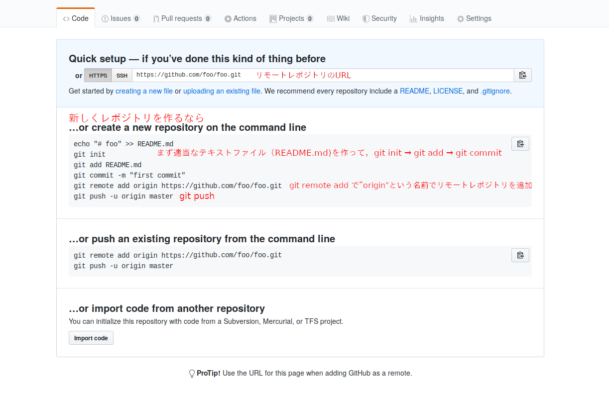

Gitとは
Gitは バージョン管理システム（Version Control System; VCS） の1つで，ディレクトリ内のすべてのファイルの履歴を保存するためのソフトウェア。
使用例
VCSのない世界
1.
たとえばまず main.c というファイルを作って以下のように書いたとする。
#include <stdio.h>
#include <stdlib.h>
// ゼロ除算をチェックして割り算する関数
int my_div(int a, int b) {
if (b == 0) {
fprintf(stderr, "Zero division error\\n");
exit(1);
}
return a / b;
}
int main(void) {
// 20 / 4 の結果を表示する
printf("%d\\n", my_div(20, 4));
return 0;
}
2.
次に，4でしか割らないからゼロ除算のチェックは不要であったことに気づき，my_div関数を消したとする。
#include <stdio.h>
int main(void) {
// 20 / 4 の結果を表示する
printf("%d\\n", 20 / 4);
return 0;
}
3.
その数日後，割る数にargcを使うようにしたいと思い，以下のようにプログラムを修正したとする。
#include <stdio.h>
int main(int argc) {
// 20 / (argc - 1) の結果を表示する（argcはプログラムに渡された引数の個数）
printf("%d\\n", 20 / (argc - 1));
return 0;
}
ここでargcが1だとエラーになるから， 1. で作った my_div 関数がほしい！でももう上書き保存してしまってもう一度書くしかない！となる。
4.
次から，このプログラマはプログラムに変更を加えるたびに 日付 （または連番）をつけて保存するようになる...
MyProject/
main.c # 最新バージョン
main_20190405_1.c # 2019年4月5日(1)
main_20190405_2.c # 2019年4月5日(2)
main_20190405_3.c # 2019年4月5日(3)
main_20190406.c # 2019年4月6日
main_20190408.c
main_20190520_1.c
main_20190520_2.c
...
VCSのある世界
1.
まずターミナルで git init を打ってから作業を開始する
$ git init
Initialized empty Git repository in /home/foo/bar/.git/
2.
main.cを作って git add → git commit
-m "コミットメッセージ" はコミットにつけるメッセージの指定で，あとで見返した時に何の変更をしたのかがすぐに分かるようにするためのもの。（必須）
#include <stdio.h>
#include <stdlib.h>
// ゼロ除算をチェックして割り算する関数
int my_div(int a, int b) {
if (b == 0) {
fprintf(stderr, "Zero division error\\n");
exit(1);
}
return a / b;
}
int main(void) {
// 20 / 4 の結果を表示する
printf("%d\\n", my_div(20, 4));
return 0;
}
$ git add .
$ git commit -m "initial commit"
[master (root-commit) 7d7d553] initial commit
1 files changed, 18 insertions(+)
create mode 100644 main.c
3.
main.cを編集して git add → git commit
#include <stdio.h>
int main(void) {
// 20 / 4 の結果を表示する
printf("%d\\n", 20 / 4);
return 0;
}
$ git add .
$ git commit -m "div関数を削除"
[master bd23c17] div関数を削除
1 files changed, 1 insertion(+), 12 deletions(-)
4.
ここで， 3. で上書き保存して消えたmy_div関数をgitの履歴から取り出すために， 2.の時点でのディレクトリの状態を復元する
$ # コミットのリストを表示。HEADが現在のディレクトリの状態，
$ # bd23c17と7d7d553はそれぞれのコミットのID
$ git log --oneline
bd23c17 (HEAD -> master) div関数を削除
7d7d553 initial commit
$ # IDが7d7d553のコミットの状態へディレクトリを復元する
$ git checkout 7d7d553
Note: checking out '7d7d553'.
...
テキストエディタでmain.cを開くと，my_div関数が存在する。
#include <stdio.h>
#include <stdlib.h>
// ゼロ除算をチェックして割り算する関数
int my_div(int a, int b) {
if (b == 0) {
fprintf(stderr, "Zero division error\\n");
exit(1);
}
return a / b;
}
int main(void) {
// 20 / 4 の結果を表示する
printf("%d\\n", my_div(20, 4));
return 0;
}
復元したmy_div関数をコピーできたら，最新の状態（my_div関数を消した後の状態）に戻る必要がある。そのためには以下のコマンドを打つ。
$ # 最新の状態へ戻る
$ git checkout master
補足
単に特定のコミットの時点でのファイルを閲覧するだけなら git show コマンドを使えば良い。
$ git show 7d7d553:main.c
... ここにファイルの内容が出力される
なぜファイルに日付を付けて保存していくのでは駄目なのか
- VCSを使うと，変更が圧縮されて保存される
- 保存対象からディレクトリ内の一部のファイル（コンパイル後の 実行可能ファイル など）を自動で除くことができる
- ファイル数が増えないため，ディレクトリが散乱しない
- 各コミットで何を変更したのかを コミットメッセージ で確認できる
- 誰が変更したのか，いつ変更されたのかが分かる
- 複数人での履歴の共有が容易（後述）
- 使ってないと時代遅れ
履歴はどこに保存されるのか
git init コマンドを打ったディレクトリに生成される .git というフォルダの中に保存されている。
以上の内容の動画
コマンドを覚えられない
Gitはコマンドを打って使うものだという硬派な人も多いが， GitHub Desktop , GitKraken, SourceTree, Fork などのグラフィカルなツールを使ったほうが生産性が高い（個人的な意見です）。VSCodeなどのエディタに内蔵されている機能を使うのでも良い。
それぞれの比較:
- GitHub Desktop: 使うのが 一番簡単 だが高度な機能は（今のところ）用意されていない
- GitKraken: 機能が多いが，初心者には少し難しいかもしれない。
- SourceTree: GitKrakenとほとんど同じ。
- Fork: 使っていないが，良いらしいと聞く。
他のVCSは？
Gitは 2005年 に登場した比較的新しいVCS。以前は subversion や Mercurial などが使われていたが，今はgitの一人勝ち。
GitHubとの違いは？
gitはバージョン管理システム。GitHubは Microsoftの， gitの履歴を複数人で共有するためのクラウドストレージ。
競合としてGitLab（GitLab Inc.）, GitBucket（Atlassian）などがある。
Gitを使った共同編集
bare git repository
複数のgitレポジトリ（ git init を実行したディレクトリ）を同期するには， bare git repository が必要。bare git repositoryは git init --bare で作成できる。
git remote add <任意の名前>; <urlやファイルパスなど>; で同期に使うbare git repositoryを追加できる。ここで追加したレポジトリを リモートレポジトリ という。 git remote -v で今までに追加したリモートレポジトリのリストを表示できる。なお，リモートではない（ --bare をつけずに初期化した）レポジトリは ローカルレポジトリ という。
git push <リモートレポジトリに付けた名前>; master でリモートレポジトリへファイルの変更履歴を送信できる。 git pull <リモートレポジトリに付けた名前>; master でリモートレポジトリにあるファイルの変更履歴を受信できる。
以下の動画ではそれを試している。左の段がローカルレポジトリ1，真ん中の段がリモートレポジトリ，右の段がローカルレポジトリ2。動画では，各ローカルレポジトリを異なるユーザーが使用すると想定して，user1, user2と名付けている。
まず左の段のローカルレポジトリから右の段のレポジトリへgitの履歴を送り，次に逆方向も試している。
git push を実行したときに中段のVSCode上のファイルに変化があることが分かる。
なお，今回はbareレポジトリのディレクトリ名をremote-serverという名前にしたが，実際のプロジェクトでは慣習として.gitで終わる名前をつけることが多い。（例: remote-server.git）
Gitホスティングサービス
複数人で作業する場合は， リモートレポジトリ が各ユーザーからアクセスできる場所（インターネット上）にないといけない。そのために Gitホスティングサービス を利用する必要がある。 GitHub はGitホスティングサービスのうちのひとつ。
たとえばGitHubで新しくレポジトリを作成すると，このように表示される。※レポジトリ名は加工してfoo/fooに変更しました
なお， git push -u の -u は上流ブランチの設定を行うオプションで， git pull での省略記法を可能にする役割がある。

git clone
リモートレポジトリのデータをローカルレポジトリにもってくる作業は，以上のように git remote add と git pull でやっても良いが， git clone を使うと簡単にできる。
コンフリクト
コンフリクトと対処方法
複数人で同じファイルに同時に変更を加えると， コンフリクト が発生する。（下図を参照。text: xxxはファイルの中身がxxxであることを表す。）

コンフリクトが起きると git push が実行できなくなる。そうなったら，一度 git pull を行った後にコンフリクトを解消してコミットし，もう一度 git push すればよい。（以下の動画を参照）